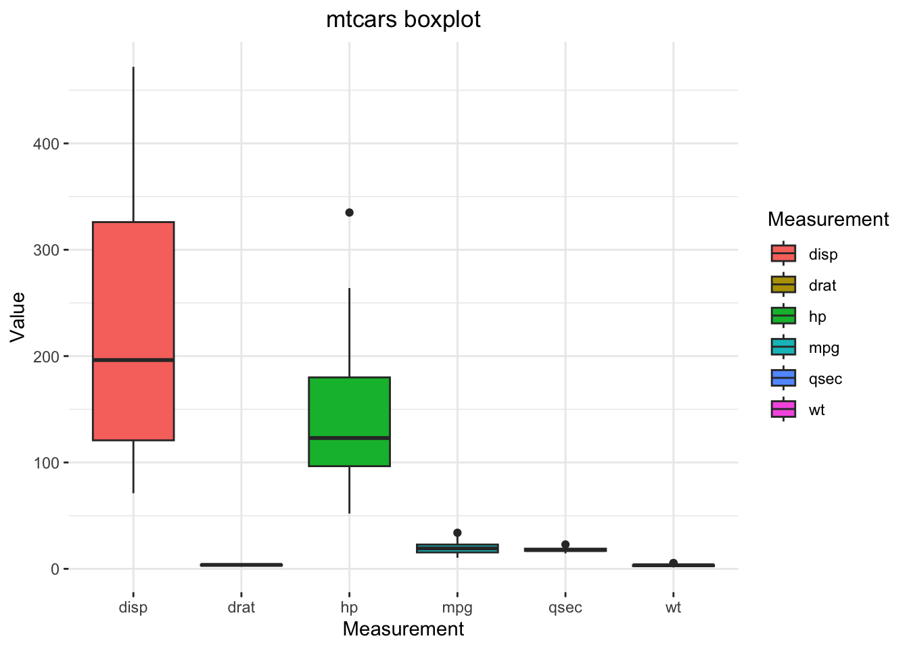
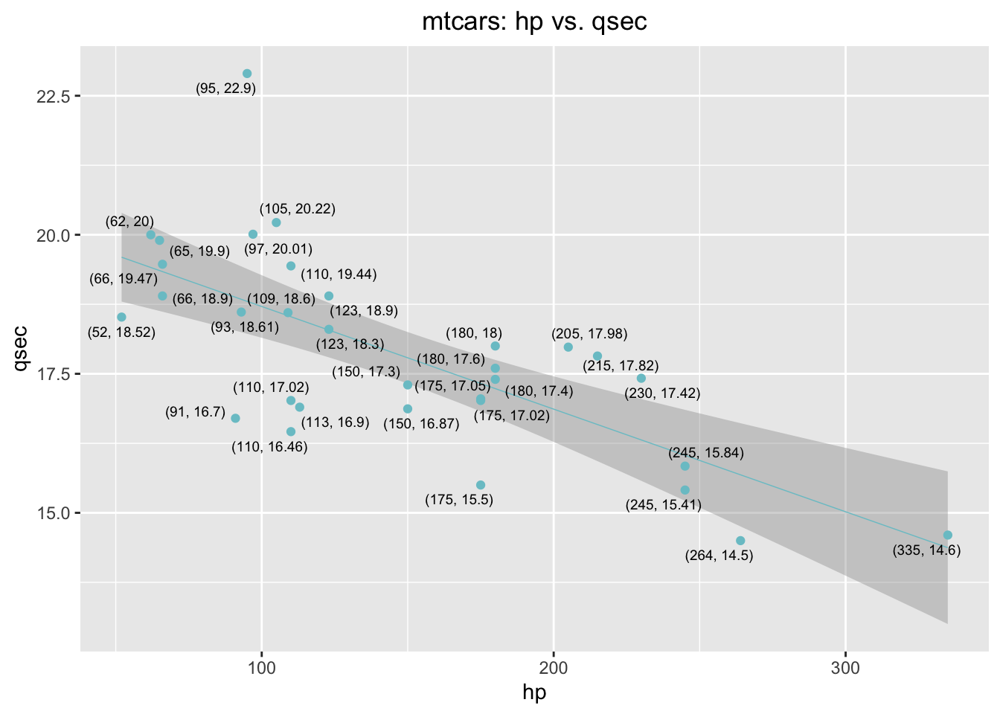
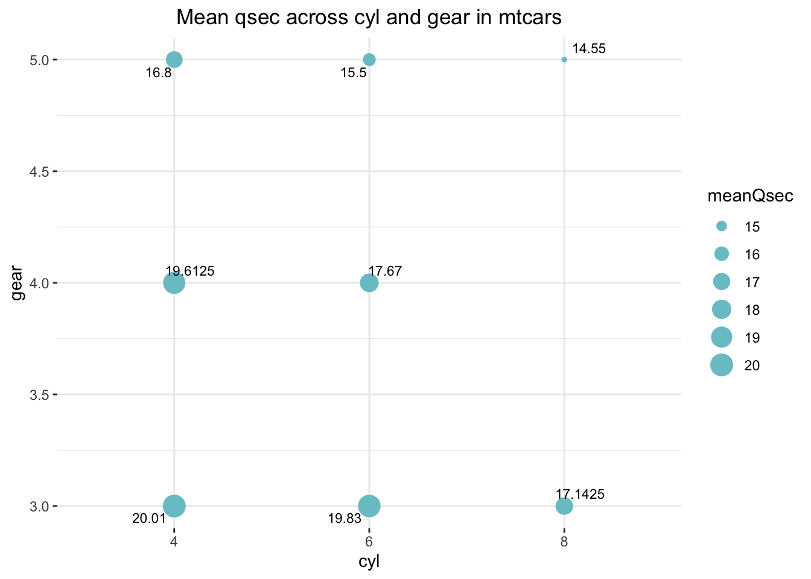

Session05 Exploratory Data Analysis in R
Goran S. Milovanovic, PhD

Exploratory Data Analysis in R
What do we want to do today?
This is the beginning of our journey into Data Science and Analytics in R. Thus far, we have been learning about R programming, more or less treating R as any other programming language. Now we begin to master the real power of R in its areas of specialization: analytics, statistics, machine learning, visualization, and reporting. And as you will see: in statistics, nothing compares to R.
Exploratory Data Analysis (EDA) is a concept in Data Analytics/Statistics promoted by John Tukey in the 60s who defined data analysis as:
“Procedures for analyzing data, techniques for interpreting the results of such procedures, ways of planning the gathering of data to make its analysis easier, more precise or more accurate, and all the machinery and results of (mathematical) statistics which apply to analyzing data.”
Source: Exploratory data analysis. (n.d.). In Wikipedia. Retrieved February 03, 2021
EDA is a set of procedures, not strictly standardized, that is used to understand the data at hand before getting engaged in statistical/machine learning, hypothesis testing, and other heavy machinery found in the arsenal of contemporary Data Science. EDA is pretty much a thinking and creative step: it is when hypothesis generation should happen in the process. Before applying a statistical model to our data sets we first need to understand the properties of the data present there, and then only draw a conclusion on what mathematical model exactly should be used to learn more from them. Of course, hypothesis generation does not end in EDA. More often than not, one EDA -> data modeling cycle is followed by additional insights that lead to hypotheses about the data. Then we go back and perform some EDA again, and than perhaps model again, until we find out what is the most useful that can be learned from the present data in respect to the problem that we need to solve. In other words: EDA is found pretty much at the very core of Data Science and Analytics.
Data visualization is used heavily in the EDA phase.
1. Summarise a dataset
1.1 Basic descriptive statistics
We will begin by understanding what is in mtcars, a
famous dataset (see
mtcars documentation) often used in educational purposes that is
built-in R:
data(mtcars)
head(mtcars)## mpg cyl disp hp drat wt qsec vs am gear carb
## Mazda RX4 21.0 6 160 110 3.90 2.620 16.46 0 1 4 4
## Mazda RX4 Wag 21.0 6 160 110 3.90 2.875 17.02 0 1 4 4
## Datsun 710 22.8 4 108 93 3.85 2.320 18.61 1 1 4 1
## Hornet 4 Drive 21.4 6 258 110 3.08 3.215 19.44 1 0 3 1
## Hornet Sportabout 18.7 8 360 175 3.15 3.440 17.02 0 0 3 2
## Valiant 18.1 6 225 105 2.76 3.460 20.22 1 0 3 1The shape of the mtcars data:
print(paste0("mtcars has ",
dim(mtcars)[1],
" rows and ",
dim(mtcars)[2],
" columns."))## [1] "mtcars has 32 rows and 11 columns."Let’s remind ourselves of the base R summary()
function:
summary(mtcars)## mpg cyl disp hp drat wt
## Min. :10.40 Min. :4.000 Min. : 71.1 Min. : 52.0 Min. :2.760 Min. :1.513
## 1st Qu.:15.43 1st Qu.:4.000 1st Qu.:120.8 1st Qu.: 96.5 1st Qu.:3.080 1st Qu.:2.581
## Median :19.20 Median :6.000 Median :196.3 Median :123.0 Median :3.695 Median :3.325
## Mean :20.09 Mean :6.188 Mean :230.7 Mean :146.7 Mean :3.597 Mean :3.217
## 3rd Qu.:22.80 3rd Qu.:8.000 3rd Qu.:326.0 3rd Qu.:180.0 3rd Qu.:3.920 3rd Qu.:3.610
## Max. :33.90 Max. :8.000 Max. :472.0 Max. :335.0 Max. :4.930 Max. :5.424
## qsec vs am gear carb
## Min. :14.50 Min. :0.0000 Min. :0.0000 Min. :3.000 Min. :1.000
## 1st Qu.:16.89 1st Qu.:0.0000 1st Qu.:0.0000 1st Qu.:3.000 1st Qu.:2.000
## Median :17.71 Median :0.0000 Median :0.0000 Median :4.000 Median :2.000
## Mean :17.85 Mean :0.4375 Mean :0.4062 Mean :3.688 Mean :2.812
## 3rd Qu.:18.90 3rd Qu.:1.0000 3rd Qu.:1.0000 3rd Qu.:4.000 3rd Qu.:4.000
## Max. :22.90 Max. :1.0000 Max. :1.0000 Max. :5.000 Max. :8.000summary() is the simplest possible way to obtain the
basic statistics of a dataset in R. As you can see, for each variable in
mtcars, we have obtained: (a) its minimum, (b) its maximum,
(c) its mean and median as measures of central tendency, (d) the value
of Q1 which is the 25th quantile indeed and the value of Q3 which is the
75th quantile (to be explained in the session).
Of course we can ask for any of these statistics for any of the
variables present in mtcars separately, e.g.:
mean(mtcars$qsec)## [1] 17.84875median(mtcars$qsec)## [1] 17.71min(mtcars$qsec)## [1] 14.5max(mtcars$qsec)## [1] 22.9What is the range of mtcars$qsec - the difference
between its maximum and minimum?
range(mtcars$qsec)## [1] 14.5 22.9So the first element is the minimum and the second is the maximum. Then, maybe:
# NOTE: study this
rangeQsec <- abs(Reduce("-", range(mtcars$qsec)))
print(rangeQsec)## [1] 8.4And abs() is, of course, to obtain the absolute
value.
Let’s talk about quantiles now:
quantile(mtcars$qsec, probs = .25)## 25%
## 16.8925quantile(mtcars$qsec, probs = c(.25, .5, .75))## 25% 50% 75%
## 16.8925 17.7100 18.9000And the 50% quantile is the median of the
mtcars$qsec variable.
1.2 The Boxplot: base R and then {ggplot2}
Numbers and numbers only… Data visualization is way better
to understand the data than by just looking at numbers. Let’s begin with
the base R function boxplot() to visualize only one
variable, mtcars$qsec, and learn what boxplots are for. As
you will see, they are among the most helpful tools to understand the
distribution of the values of some measurement in statistics.
boxplot(mtcars$qsec,
horizontal = TRUE,
xlab = "qsec",
col = "darkorange",
main = "Boxplot: qsec")
The thick line in the box stands where the median of the
mtcars$qsec is found. The box is bounded by Q1 (25%) from
the left and Q3 (75%) from the right. The width of the box thus equates
the IQR - Interquartile Range - which is the difference
between Q3 and Q1: IQR = Q3 - Q1. What about the length of
the whiskers, and why is there that lonely point to the right marked?
That needs some discussion:
## NOTE: Boxplot "fences" and outlier detection
# Q3 = 75 percentile, Q1 = 25 percentile
Q3 <- quantile(mtcars$qsec, .75)
Q3## 75%
## 18.9Q1 <- quantile(mtcars$qsec, .25)
Q1## 25%
## 16.8925# IQ = Q3 - Q1; Interquartile range
IQR <- unname(Q3 - Q1)
IQR## [1] 2.0075The definitions of the fences used in R are:
- Lower inner fence:
Q1 - 1.5*IQR - Upper inner fence:
Q3 + 1.5*IQR - Lower outer fence:
Q1 - 3*IQR - Upper outer fence:
Q3 + 3*IQR - A point beyond an inner fence on either side is considered a mild outlier
- A point beyond an outer fence is considered an extreme outlier
Now, let’s find out about the outlier to the right of the boxplot’s whiskers in our plot:
lif <- Q1 - 1.5*IQR
uif <- Q3 + 1.5*IQR
lof <- Q1 - 3*IQR
uof <- Q3 + 3*IQR
mtcars$qsec[mtcars$qsec > uif]## [1] 22.9mtcars$qsec[mtcars$qsec > uof]## numeric(0)Conclusion: there is one point in mtcars$qsec that is
positioned above the upper inner fence in the boxplot, and that
one point represents a mild outlier because it does not go
beyond the upper outter fence. There are no outliers bellow
lower fences in mtcars$qsec.
We have found one outlier… And that would be your first step on the road to anomaly detection in Data Science!
Now, can we visualize more than one variable in the
mtcars dataset and thus try to understand the dataset as a
whole, or at least a large part of it? Of course:
boxplot(mtcars[ , c('mpg', 'disp', 'hp', 'drat', 'wt', 'qsec')],
horizontal = FALSE,
xlab="qsec",
ylab = "value",
col = "darkorange",
main = "Boxplot")
But the variables seem to be on different scales. What can often help in situations like this one is to use the logarithmic scaling:
boxplot(mtcars[ , c('mpg', 'disp', 'hp', 'drat', 'wt', 'qsec')],
horizontal = FALSE,
xlab="qsec",
ylab = "log(value)",
log = "y",
col = "indianred",
main = "Boxplot: qsec")While even base R offers great means to visualize data, {ggplot2} is the industrial standard data visualization package and it is definitely way, way better. We will now begin our study of the anatomy of a ggplot2 plot using our boxplot as an example.
In order to produce a boxplot with ggplot2, mtcars first need to be transformed from the wide data representation format into a long data representation format:
# load tidyverse
library(tidyverse)
# introduce id column
mtcars$id <- 1:dim(mtcars)[1]
# wide to long transform
mtcarsPlot <- mtcars %>%
dplyr::select(id, mpg, disp, hp, drat, wt, qsec) %>%
tidyr::pivot_longer(cols = -id,
names_to = "Measurement",
values_to = "Value")
head(mtcarsPlot, 30)## # A tibble: 30 × 3
## id Measurement Value
## <int> <chr> <dbl>
## 1 1 mpg 21
## 2 1 disp 160
## 3 1 hp 110
## 4 1 drat 3.9
## 5 1 wt 2.62
## 6 1 qsec 16.5
## 7 2 mpg 21
## 8 2 disp 160
## 9 2 hp 110
## 10 2 drat 3.9
## # ℹ 20 more rowsDo you understand the difference between long and
wide data formats? We will discuss it live in our
session! The select() function used in the code above is
from the {dplyr} package: it simply selects only the
desired columns from a dataframe. Then, the pivot_longer()
function, from the {tidyr} package, transform the wide
mtcarsinto the long mtcarsPlot following the
addition of the id column to mtcars because we
want to keep track of the mapping between models (i.e. rows, records) in
the original dataset and its long format!
Here is a step by step analysis of the code above:
Adding an
idcolumn to themtcarsdata frame:mtcars$id <- 1:dim(mtcars)[1]mtcarsis a built-in data frame in R that contains various automobile data.dim(mtcars)[1]retrieves the number of rows in themtcarsdata frame becausedim()returns the dimensions of an object as a vector where the first element is the number of rows and the second element is the number of columns.1:dim(mtcars)[1]creates a sequence of numbers starting from 1 to the number of rows inmtcars.mtcars$id <-assigns this sequence to a new column in themtcarsdata frame namedid. Thisidcolumn now acts as a unique identifier for each row (each car).
Creating a new data frame
mtcarsPlotby selecting and transforming themtcarsdata frame:mtcarsPlot <- mtcars %>% dplyr::select(id, mpg, disp, hp, drat, wt, qsec) %>% tidyr::pivot_longer(cols = -id, names_to = "Measurement", values_to = "Value")mtcars %>%takes themtcarsdata frame and passes it on to the next function in the pipeline (denoted by%>%).dplyr::select(id, mpg, disp, hp, drat, wt, qsec)uses theselectfunction from thedplyrpackage to keep only the columnsid,mpg(miles per gallon),disp(displacement),hp(horsepower),drat(rear axle ratio),wt(weight), andqsec(1/4 mile time).tidyr::pivot_longer(cols = -id, names_to = "Measurement", values_to = "Value")transforms the data frame from wide to long format usingpivot_longerfrom thetidyrpackage:cols = -idindicates that all columns exceptidshould be transformed into two new columns.names_to = "Measurement"specifies that the original column names (likempg,disp, etc.) should be placed in a new column calledMeasurement.values_to = "Value"specifies that the values from the original columns should be placed in a new column calledValue.
The result of this transformation (
mtcarsPlot) is a longer format data frame where each row represents one measurement (likempgorhp) of a car. Theidcolumn links each measurement back to the original row inmtcars, making it easier to perform grouped analyses or plots where each car’s multiple attributes are needed in a tidy format. This format is particularly useful for plotting or statistical analysis in R.
Now, the boxplot with {ggplot2}:
ggplot(data = mtcarsPlot,
aes(x = Measurement,
y = Value,
fill = Measurement)) +
geom_boxplot() +
ggtitle("mtcars boxplot") +
theme_bw() +
theme(panel.border = element_blank()) +
theme(plot.title = element_text(hjust = .5)) +
theme(legend.position = "right")
Note. We use + to chain the layers in
{ggplot2} visualizations, similarly as we use the pipes to chain data
transformations. Do not confuse + as used to build a
{ggplot2} visualization with + as an arithmetic operation
or %>%.
We will play with various transformations of this boxplot in our
session to learn about the basics of the fantastic, powerful {ggplot2}
package! For example, let’s produce a scatterplot -
another very important visualization in statistics and analytics to
learn about - of two variables from mtcars with {ggplot2},
just to see how easy it is:
ggplot(data = mtcars,
aes(x = hp,
y = qsec)) +
geom_point(size = 2, color = "darkred") +
ggtitle("mtcars: hp vs. qsec") +
theme_bw() +
theme(panel.border = element_blank()) +
theme(plot.title = element_text(hjust = .5))Hypothesis. There is a negative linear relationship
between mtcars$hp and mtcars$qsec. Let’s
see:
ggplot(data = mtcars,
aes(x = hp,
y = qsec)) +
geom_smooth(method = "lm", size = .25, color = "darkblue") +
geom_point(size = 2, color = "cadetblue3") +
ggtitle("mtcars: hp vs. qsec") +
theme_bw() +
theme(panel.border = element_blank()) +
theme(plot.title = element_text(hjust = .5))Can our hypothesis be falsified? We will see in the remainder of the course. Now back to the EDA things! Before that, just another {ggplot2} trick to help you understand your data better…
mtcarsPlot <- mtcars %>%
dplyr::select(hp, qsec)
mtcarsPlot$label <- paste0("(",
mtcarsPlot$hp, ", ",
mtcarsPlot$qsec,
")")
ggplot(data = mtcarsPlot,
aes(x = hp,
y = qsec,
label = label)) +
geom_smooth(method = "lm", size = .25, color = "cadetblue3") +
geom_point(size = 2, color = "cadetblue3") +
geom_text(size = 2) +
ggtitle("mtcars: hp vs. qsec") +
theme_bw() +
theme(panel.border = element_blank()) +
theme(plot.title = element_text(hjust = .5))Not readable enough? install.packages(ggrepel). Now,
library(ggrepel)
mtcarsPlot <- mtcars %>%
select(hp, qsec)
mtcarsPlot$label <- paste0("(",
mtcarsPlot$hp, ", ",
mtcarsPlot$qsec,
")")
ggplot(data = mtcarsPlot,
aes(x = hp,
y = qsec,
label = label)) +
geom_smooth(method = "lm", size = .25, color = "cadetblue3") +
geom_point(size = 1.5, color = "cadetblue3") +
geom_text_repel(size = 2.5) +
ggtitle("mtcars: hp vs. qsec") +
theme(panel.border = element_blank()) +
theme(plot.title = element_text(hjust = .5))
2. Distributions and histograms
Q. How is the number of cylinders -
mtcars$cyl - distributed across the models in the
dataset?
mtcarsPlot <- mtcars %>%
dplyr::select(cyl) %>%
dplyr::group_by(cyl) %>%
dplyr::summarise(count = n())
mtcarsPlot## # A tibble: 3 × 2
## cyl count
## <dbl> <int>
## 1 4 11
## 2 6 7
## 3 8 14I have used dplyr::select() to single out only the
cyl variable, then grouped the data with
dplyr::group_by to be able to aggregate across the distinct
values in cyl, and finally used
dplyr::summarise() to compute a new variable,
count, in mtcarsPlot, by the
dplyr::n() function which simply counts the number of
elements in each group following dplyr::group_by. The
chart:
ggplot(data = mtcarsPlot,
aes(x = cyl,
y = count)) +
geom_bar(stat = "identity", fill = "cadetblue4", width = .5) +
ggtitle("Number of cylinders across the models found in mtcars") +
theme(panel.border = element_blank()) +
theme(plot.title = element_text(hjust = .5))How about the distribution of continuous variables? Remember our Exercises in Session03?
ggplot(mtcars,
aes(x = hp,
fill = cyl,
group = cyl)) +
geom_density(alpha = .15, color = "black") +
ggtitle("Distrubutions of hp across cyl") +
xlab('hp') +
ylab('Density') +
theme_bw() +
theme(panel.border = element_blank()) +
theme(plot.title = element_text(hjust = .5))Fine, but… mtcars$cyl needs to become an R
factor first!
mtcars$cyl <- as.factor(mtcars$cyl)
ggplot(mtcars,
aes(x = hp,
fill = cyl,
group = cyl)) +
geom_density(alpha = .15, color = "black") +
ggtitle("Distrubutions of hp across cyl") +
xlab('hp') +
ylab('Density') +
theme_bw() +
theme(panel.border = element_blank()) +
theme(plot.title = element_text(hjust = .5))The overall distribution of mtcars$hp is:
ggplot(mtcars,
aes(x = hp)) +
geom_density(alpha = .15, color = "black", fill = "darkorange") +
ggtitle("Distrubution of hp in mtcars") +
xlab('hp') +
ylab('Density') +
theme_bw() +
theme(panel.border = element_blank()) +
theme(plot.title = element_text(hjust = .5))3. Cross-Tabulations and Aggregations
Q. How is the average qsec distributed
across cyl and gear in
mtcars?
distribution <-
mtcars %>%
dplyr::select(cyl, gear, qsec) %>%
dplyr::group_by(cyl, gear) %>%
dplyr::summarise(meanQsec = mean(qsec),
count = n())
print(distribution)## # A tibble: 8 × 4
## # Groups: cyl [3]
## cyl gear meanQsec count
## <fct> <dbl> <dbl> <int>
## 1 4 3 20.0 1
## 2 4 4 19.6 8
## 3 4 5 16.8 2
## 4 6 3 19.8 2
## 5 6 4 17.7 4
## 6 6 5 15.5 1
## 7 8 3 17.1 12
## 8 8 5 14.6 2Now, one of my favorite {ggplot2} tricks to visualize a dataset like this one:
ggplot(distribution,
aes(x = cyl,
y = gear,
size = meanQsec,
label = meanQsec)) +
geom_point(color = "cadetblue3") +
ggtitle("Mean qsec across cyl and gear in mtcars") +
geom_text_repel(size = 3) +
theme_bw() +
theme(panel.border = element_blank()) +
theme(plot.title = element_text(hjust = .5))
Or you can use facet_warp() in {ggplot2}:
ggplot(distribution,
aes(x = gear,
y = meanQsec,
label = meanQsec)) +
geom_bar(stat = "identity",
color = "black",
fill = "darkorange") +
facet_wrap(~cyl) +
ggtitle("Mean qsec across cyl and gear in mtcars") +
geom_text_repel(size = 3) +
theme_bw() +
theme(panel.border = element_blank()) +
theme(plot.title = element_text(hjust = .5))Further Readings
Important sources, documentation, etc.
- Advanced R, Hadley Wickham, 2nd edition
- Quick-R - An excellent set of concise R tutorials.
- CRAN: The Comprehensive R Archive Network - This is were the official versions of R packages live
- Colors in R (PDF)
- ggplot2 Reference
- RDocumentation: Search all 21,217 CRAN, Bioconductor and GitHub packages
R Markdown
R Markdown is what I have used to produce this beautiful Notebook. We will learn more about it near the end of the course, but if you already feel ready to dive deep, here’s a book: R Markdown: The Definitive Guide, Yihui Xie, J. J. Allaire, Garrett Grolemunds.
License: GPLv3 This Notebook is free software: you can redistribute it and/or modify it under the terms of the GNU General Public License as published by the Free Software Foundation, either version 3 of the License, or (at your option) any later version. This Notebook is distributed in the hope that it will be useful, but WITHOUT ANY WARRANTY; without even the implied warranty of MERCHANTABILITY or FITNESS FOR A PARTICULAR PURPOSE. See the GNU General Public License for more details. You should have received a copy of the GNU General Public License along with this Notebook. If not, see http://www.gnu.org/licenses/.

Contact: goran.milovanovic@datakolektiv.com

Impressum
Data Kolektiv, 2004, Belgrade.